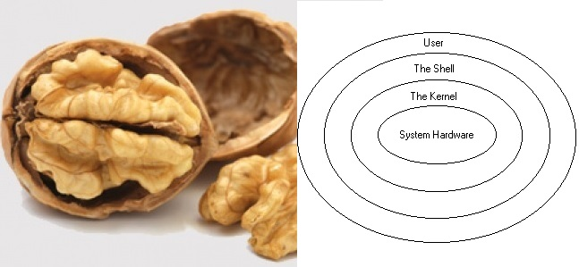

background-image: url(background.png) background-position: center; background-repeat: no-repeat; background-size: contain; class: center, middle Minicurso Linux =============== Gustavo Aguiar, Danilo Nery Software Freedom Day <!-- part1 --> <!-- introdução e bate-papo --> --- background-image: url(background.png) background-position: center; background-repeat: no-repeat; background-size: contain; class: center, middle <h1>Uma breve introdução</h1> --- background-image: url(background.png) background-position: center; background-repeat: no-repeat; background-size: contain; Linux ===== <h3> O que é Linux? </h3> Linux é um Kernel Monolítico livre e de código aberto baseado em UNIX. Criado <a href="https://en.wikipedia.org/wiki/History_of_Linux#The_creation_of_Linux" target="_blank">"just for fun"</a> por Linus Torvalds, e anunciado em 1991. <h3> ...e Windows? </h3> Windows é um Sistema Operacional com um kernel proprietário. --- background-image: url(background.png) background-position: center; background-repeat: no-repeat; background-size: contain; Linux ===== <h3> O que é um Kernel? </h3> Um Kernel é o software que faz a interface entre o Sistema Operacional (e aplicações) e o hardware. <h3>O projeto GNU</h3> Originalmente um projeto de sistema operacional, cujo kernel seria o GNU Hurd. O projeto se provou ambicioso demais e o sistema se resumiu a um conjunto de ferramentas de software que, eventualmente unido ao kernel Linux, deu origem ao GNU/Linux. --- background-image: url(background.png) background-position: center; background-repeat: no-repeat; background-size: contain; class: center, middle Para todos os efeitos, GNU/Linux = Linux ======================================== --- background-image: url(background.png) background-position: center; background-repeat: no-repeat; background-size: contain; Linux ===== <h3> O que são distribuições Linux e diferenças? </h3> Um Sistema Operacional GNU/Linux com adição de pacotes, configurações e de um gerenciador de pacotes (aprenderemos a trabalhar com estes). - Apt (Ubuntu, Debian) - YaST (OpenSUSE) - Pacman (Arch) - etc --- background-image: url(background.png) background-position: center; background-repeat: no-repeat; background-size: contain; Linux ===== <h3> Outros Linux NON-GNU </h3> Apesar de (ainda) não dominar o mundo do desktop, Linux é a cara da computação pervasiva. - Smart TVs - Smartphones (Android) - Sistemas embarcados em geral - etc --- background-image: url(background.png) background-position: center; background-repeat: no-repeat; background-size: contain; class: center,middle <h1> Antes de prosseguirmos... </h1> <h2> Por quê Linux? O que esperamos? </h2> <!-- part2 --> <!-- O que são terminais reais (ttys) ? --> <!-- O básico da edição de texto para resolver problemas --> <!-- O básico da linha de comando para resolver problemas (seção seguinte)? --> --- background-image: url(background.png) background-position: center; background-repeat: no-repeat; background-size: contain; class: center, middle O terminal de comando (tty) ===========================  <h3> A interface fundamental entre usuário e Linux </h3> --- background-image: url(background.png) background-position: center; background-repeat: no-repeat; background-size: contain; Bash ==== O shell bash (Bourne Again SHell) é a implementação mais popular de uma shell POSIX. Existem várias alternativas, cada uma com suas características (ksh, zsh, csh, fish, etc). <h3> Trabalho de uma shell </h3> - Fornecer uma interface entre o usuário e o sistema operacional - Gerenciar um ambiente para execução de programas - Interpretar comandos (lançar programas) --- background-image: url(background.png) background-position: center; background-repeat: no-repeat; backgorund-size: contain; <h2> Comandos básicos </h2> - `pwd` Minha localização atual na hierarquia de diretórios. - `ls` Lista os conteúdos de um diretório. - `cd` Muda o diretório de trabalho atual. - `mv` Move/renomeia arquivos e diretórios. --- background-image: url(background.png) background-position: center; background-repeat: no-repeat; backgorund-size: contain; <h2> Comandos básicos </h2> - `echo` Repita/ecoe o que lhe foi dito. - `cat` Inspeciona os conteúdos de um arquivo. - `head` e `tail` Inspeciona o topo e cauda de um arquivo, respectivamente. - `less`, `more` e `most` Inspeciona os conteúdos de um arquivo, na forma de um paginador de terminal. --- background-image: url(background.png) background-position: center; background-repeat: no-repeat; backgorund-size: contain; <h2> Comandos básicos </h2> - `touch` Cria um novo arquivo vazio. - `mkdir` Cria um novo diretório vazio. - `.` ou `source` Executa, na shell atual, o conteúdo de um arquivo. - `rm`, `rmdir` Remova/apague um arquivo ou diretório. --- background-image: url(background.png) background-position: center; background-repeat: no-repeat; backgorund-size: contain; <h2> Salve sua própria vida! </h2> - Atalhos para sinais: - `Ctrl+C` finaliza a execução do programa em mãos - `Ctrl+Z` pausa a execução do programa em mãos - `Ctrl+Y` requisita uma pausa atrasada - `kill`, `pkill` Mata um processo em execução; <a href="http://tldp.org/LDP/Bash-Beginners-Guide/html/sect_12_01.html"> sinais específicos podem ser usados.</a> --- background-image: url(background.png) background-position: center; background-repeat: no-repeat; backgorund-size: contain; <h2> Salve sua própria vida! </h2> - `man` Abra o manual de algum comando ou funcionalidade do Kernel. - `ps` ```sh ps a # todos meus processos, de todos meus terminais ps x # todos meus processos, atrelados ou não a um terminal ps axu # informações de todos os processos, de todos usuários # adicionar a opção f imprime a saída em formato de árvore de processos ``` Obtenha informações sobre processos em execução. - `w` Saiba QUEM está fazendo O QUÊ. --- background-image: url(background.png) background-position: center; background-repeat: no-repeat; backgorund-size: contain; <h2> Salve sua própria vida! </h2> - <h3>Editores de texto!!!</h3> - `nano` Tecle `Ctrl+X` para sair! - `vim` Tecle `ESC` para o modo normal, e então `:q!` e `ENTER` para sair! - <a href="http://tldp.org/LDP/abs/html/x9644.html"><h3>Comandos de Job Control!!!</h3></a> - <a href="http://www.tldp.org/LDP/abs/html/io-redirection.html"><h3>Redirecionamento de entrada/saída!!!</h3></a> --- background-image: url(background.png) background-position: center; background-repeat: no-repeat; backgorund-size: contain; Mais alguns atalhos úteis ------------------------- - `Ctrl+D` Envia o caractere "fim de arquivo" (EOF) para o programa. Caso o programa espere um input, isso pode sinalizar input vazio ou fim de input. ```sh tee arquivo-teste.txt # digite algumas coisas e aperte Ctrl+D ``` - `Ctrl+R` Inicia a busca reversa no histórico de comandos. - `Ctrl+L` Limpa a tela (da mesma forma que o comando `clear`). <!-- part3 --> <!-- O que é a sessão gráfica (dada por Xorg)? --> <!-- O que são terminais na sessão gráfica (ptss)? --> --- background-image: url(background.png) background-position: center; background-repeat: no-repeat; backgorund-size: contain; class: middle, center E a interface gráfica? ====================== Um pouco sobre X11 e Xorg. -------------------------- <!-- part4 --> <!-- TODO Como usar o gerenciador de pacotes da plataforma? --> <!-- part5 --> <!-- TODO Como usar o gerenciador de pacotes da plataforma? --> --- background-image: url(background.png) background-position: center; background-repeat: no-repeat; background-size: contain; Estrutura de diretórios ======================= Sistemas Linux seguem um padrão de hierarquia do sistema de arquivos. A presença de um servidor de display gráfico pode estender um pouco essa estrutura. - A raíz do sistema: `/` - A pasta pessoal do usuário (`~`): `/home/username` - A pasta pessoal do usuário `root` (administrador): `/root` de acesso restrito, normalmente guarda configurações específicas do usuário administrador. --- background-image: url(background.png) background-position: center; background-repeat: no-repeat; background-size: contain; Estrutura de diretórios ======================= - Imagem do Kernel e bootloader: `/boot` - Executáveis binários essenciais: `/bin`, `/sbin` aplicações vitais ao modo single user (modo de segurança), como `cd`, `ls`, `mv`, `cat`, `find`, `grep`, etc. - `/tmp` Arquivos temporários (Apagados a cada reboot). --- background-image: url(background.png) background-position: center; background-repeat: no-repeat; background-size: contain; Estrutura de diretórios ======================= - Processos e sockets: `/proc` ```sh pgrep firefox # encontre o PID do firefox cd /proc/pid # vá até correspondente ao PID encontrado ``` - Arquivos de configuração do sistema: `/etc` - `/etc/shadow`: informações de senhas - `/etc/passwd`: informações de usuários - `/etc/fstab`: informações do sistema de arquivos --- background-image: url(background.png) background-position: center; background-repeat: no-repeat; background-size: contain; Estrutura de diretórios ======================= - Bibliotecas essenciais aos binários em `/bin` e `/sbin`: `/lib` - Dispositivos de input/output: `/dev/` no Linux, <b>tudo é um arquivo.</b> - `/dev/null`: dispositivo nulo - `/dev/urandom`: eventos de entrada aleatórios - `/dev/tty*`: eventos de input dos terminais emulados por kernel - `/dev/pts/*`: eventos de input dos terminais emulados pelo sistema do usuário --- background-image: url(background.png) background-position: center; background-repeat: no-repeat; background-size: contain; Estrutura de diretórios ======================= - Arquivos de conteúdo variável e que tendem a crescer (logs, cache, spool): `/var` - Ponto de montagem de uso livre: `/mnt` dispositivos externos normalmente são montados em `/media`. - Aplicações e utilidades de usuários: `/usr` hierarquia secundária para dados de modo multi-usuário. --- background-image: url(background.png) background-position: center; background-repeat: no-repeat; background-size: contain; class: middle, center Como encontrar coisas no meu sistema??? ======================================= --- background-image: url(background.png) background-position: center; background-repeat: no-repeat; background-size: contain; class: middle, center <a href="http://www.tldp.org/LDP/abs/html/moreadv.html"><h1>find + grep</h1></a> --- background-image: url(background.png) background-position: center; background-repeat: no-repeat; background-size: contain; class: middle, center updatedb + locate ================= <!-- part6 --> --- background-image: url(background.png) background-position: center; background-repeat: no-repeat; backgorund-size: contain; Permissões ========== Todo o arquivo tem permissões de controle de acesso. O sistema de permissões é dividido em 3 partes principais. - Permissões de dono Denominado por `u` (user). Define quais permissões do dono do arquivo tem sobre ele. - Permissões de grupo Denominado por `g` (group). Define quais permissões os usuários no grupo do dono tem sobre o arquivo. - Permissões de outros Denominado por `o` (other). Define quais permissões os outros usuários tem sobre o arquivo. --- background-image: url(background.png) background-position: center; background-repeat: no-repeat; backgorund-size: contain; Permissões ========== As permissões em si, para cada domínio, são dividas em 3 básicas. - Leitura Denominada por `r` (read), Com valor octal 4. - Escrita Denominada por `w` (write), Com valor octal 2. - Execução Denominada por `x` (eXecute), Com valor octal 1. --- background-image: url(background.png) background-position: center; background-repeat: no-repeat; backgorund-size: contain; Permissões ========== <h3> O usuário root </h3> O `root` é o usuário com privilégios máximos no sistema operacional. Ele pode fazer **tudo**. Para usar os poderes do `root` para executar um comando, é possível usar o programa `sudo` (switch user and do) ou `su` (switch user). ```sh cat /etc/shadow sudo cat /etc/shadow ``` Como `root` é possível executar os comandos mais destrutivos gratuitamente e, por isso, **operar o tempo todo como `root` é considerada uma má prática.** --- background-image: url(background.png) background-position: center; background-repeat: no-repeat; backgorund-size: contain; Permissões ========== <h3> Bits de controle de acesso </h3> - As permissões são expressas por meio de um número octal de 3 dígitos. - O primeiro dígito se refere ao usuário, o segundo ao grupo e o terceiro aos outros. - O valor de cada dígito define as permissões que aquela categoria tem sobre o arquivo. --- background-image: url(background.png) background-position: center; background-repeat: no-repeat; backgorund-size: contain; Permissões ========== - **Exemplo:** um arquivo com permissão 664 (-rw-rw-r--) pode ser lido por todos os usuários, mas apenas alterado por usuários no grupo do dono. Nenhum usuário pode executar esse arquivo. ```sh -rw-rw-r-- ^^ ^ ^ ^ || | | | || | | sticky bit (opcional) || | | || | 3 bits para os outros (read = 4) || | || 3 bits para o grupo (read+write = 4+2 = 6) || |3 bits para o usuário dono (read+write = 4+2 = 6) | bit para o tipo de arquivo (- = arquivo, d = diretório, l = link) ``` --- background-image: url(background.png) background-position: center; background-repeat: no-repeat; backgorund-size: contain; Permissões ========== O dono do arquivo (ou `root`) pode alterar as permissões e outras características de arquivos e diretórios usando as seguintes ferramentas. - `chmod` Altere as permissões (change mode bits). Abra `man chmod`. - `chown` Altere a posse e grupo (change owner and group). Abra `man chown`. - `chattr` Altere os atributos do arquivo (change attributes). Abra `man chattr`. <!-- part7 --> <!-- TODO uma seção só sobre variáveis de ambiente --> <!-- TODO como um programa C, por exemplo, pode fazer proveito de uma variável de ambiente? --> <!-- final --> --- class: center, middle background-image: url(background.png) background-position: center; background-repeat: no-repeat; backgorund-size: contain; Perguntas, Revisão e Aprofundamento =================================== <!-- referencias --> <!-- TODO incluir o restante das referencias!!! --> --- background-image: url(background.png) background-position: center; background-repeat: no-repeat; backgorund-size: contain; Referencias ----------- Como instalar Manjaro em Dual Boot com Windows. [https://www.vivaolinux.com.br/dica/Manjaro-Linux-Dualboot-com-W8-W81-e-W10](https://www.vivaolinux.com.br/dica/Manjaro-Linux-Dualboot-com-W8-W81-e-W10) Como instalar Ubuntu em Dual boot com Windows. [http://www.everydaylinuxuser.com/2015/11/how-to-install-ubuntu-linux-alongside.html](http://www.everydaylinuxuser.com/2015/11/how-to-install-ubuntu-linux-alongside.html) Explicação da estrutura de arquivos do Linux. [http://www.thegeekstuff.com/2010/09/linux-file-system-structure/](http://www.thegeekstuff.com/2010/09/linux-file-system-structure/) Explicação das permissões de arquivos. [https://www.vivaolinux.com.br/artigo/Entendendo-as-permissoes-no-Linux](https://www.vivaolinux.com.br/artigo/Entendendo-as-permissoes-no-Linux) Explicação de permissões mais avançadas (Extra). [https://www.linux.com/learn/understanding-linux-file-permissions](https://www.linux.com/learn/understanding-linux-file-permissions) Tutorial **completo** de Bash Shell. [http://linuxcommand.org/lc3_learning_the_shell.php](http://linuxcommand.org/lc3_learning_the_shell.php) --- background-image: url(background.png) background-position: center; background-repeat: no-repeat; backgorund-size: contain; Referencias ----------- Extra: Tutorial de Bash Script. [http://linuxcommand.org/lc3_writing_shell_scripts.php](http://linuxcommand.org/lc3_writing_shell_scripts.php)